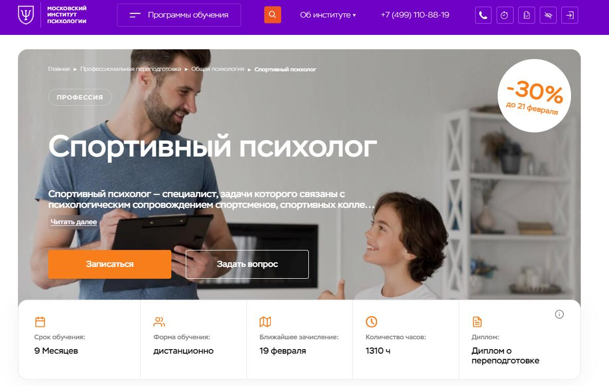
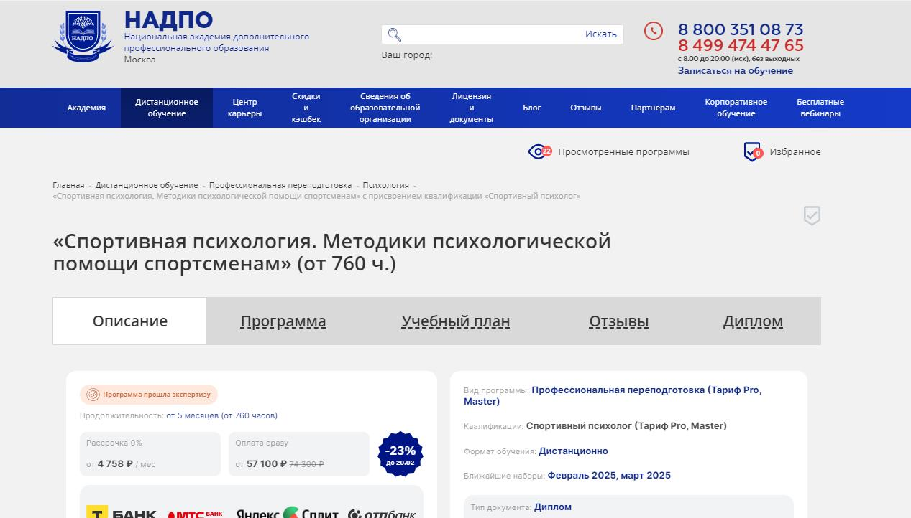
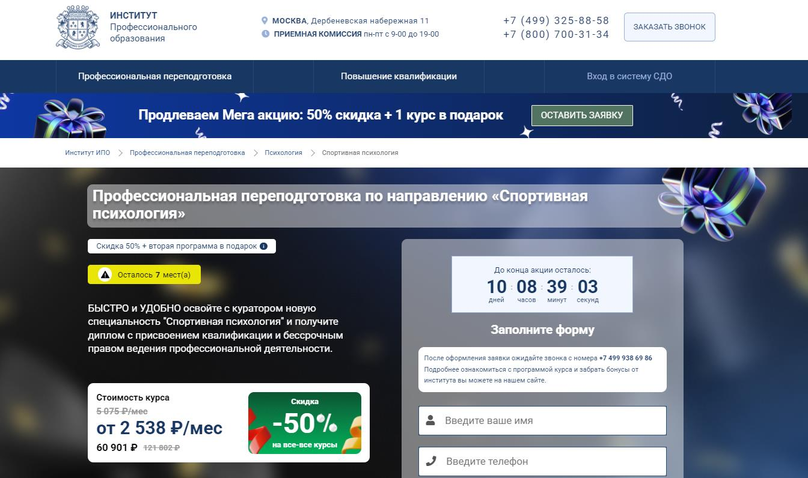
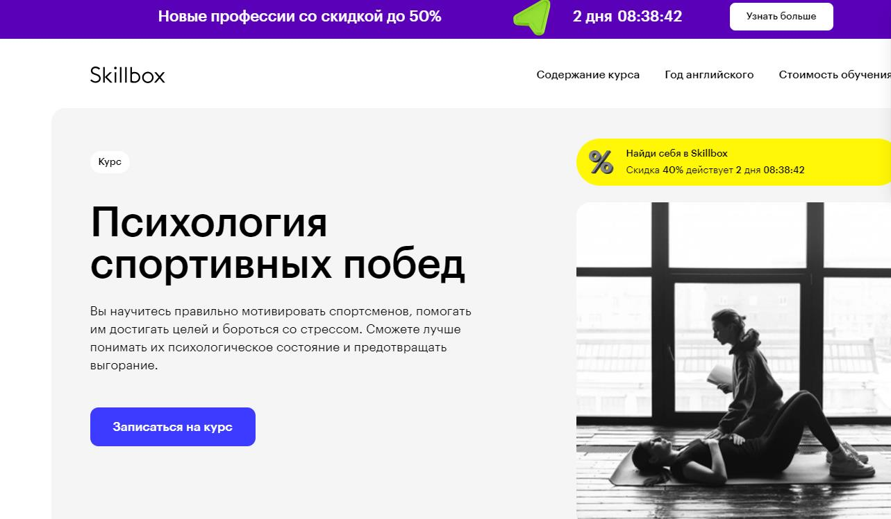
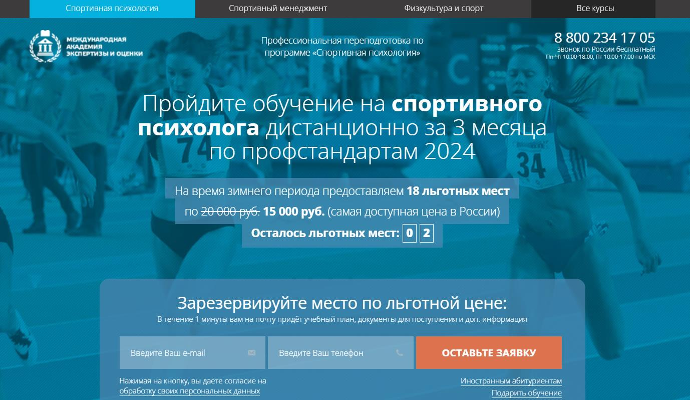
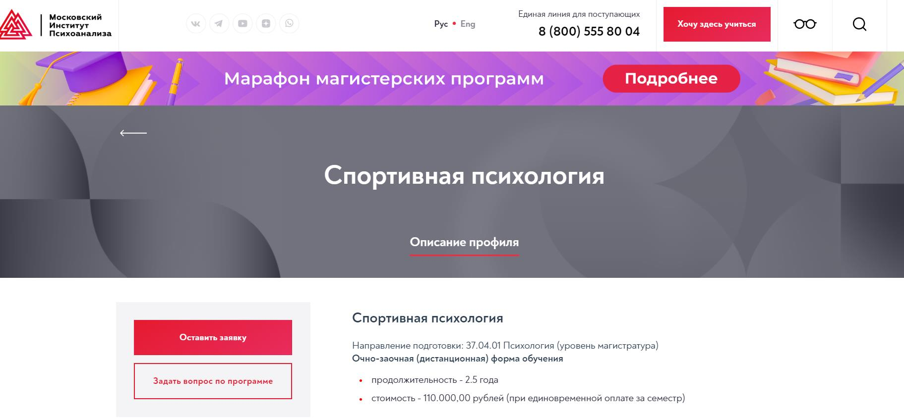
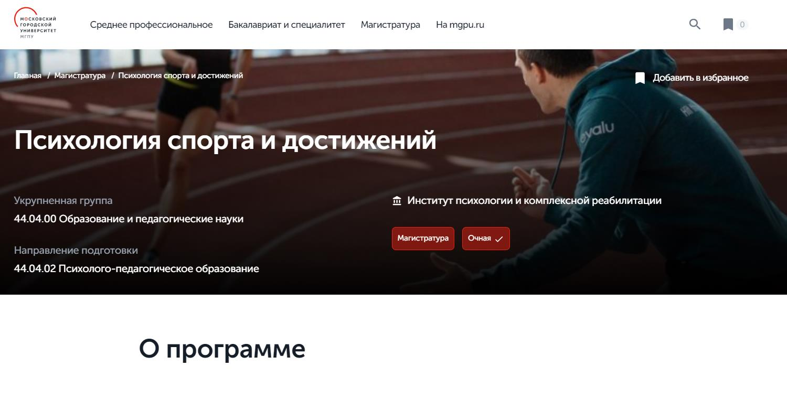
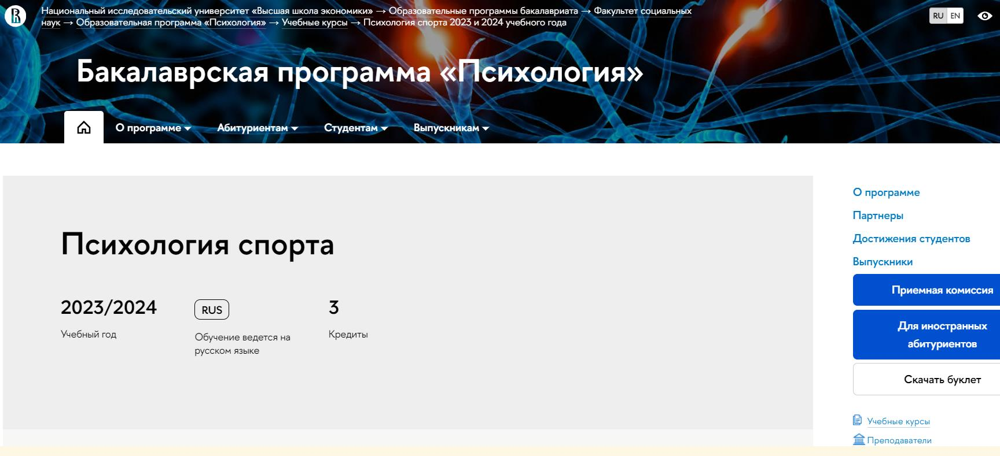
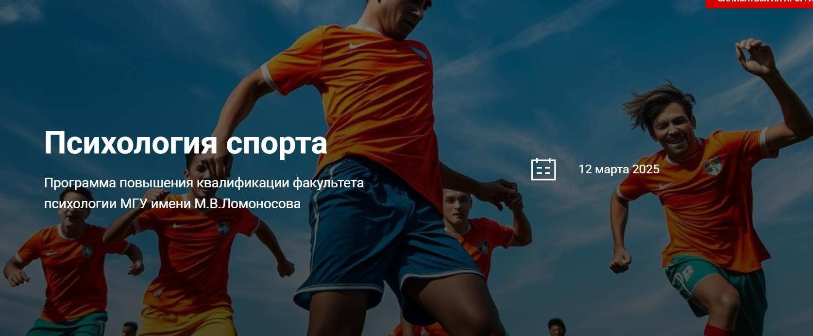

Спортивная психология — это область, изучающая психологические аспекты подготовки и тренинга в спорте. Мы составили рейтинг лучших курсов, где профессиональные программы помогут развитию необходимых навыков и обучению методикам, способствующим психологическому и физическому совершенствованию спортсменов.
Содержание статьи
- 🏆 Спортивный психолог – Московский институт психологии
- 🏆 Спортивная психология – НАДПО
- 🏆 Профессиональная переподготовка в области спортивной психологии – МИПО
- Профессиональная переподготовка по спортивной психологии – Институт Профессионального Образования ИПО
- Психология спортивных побед – Skillbox
- Программа профессиональной переподготовки по спортивной психологии – Международная Академия Экспертизы и Оценки
- Спортивная психология – Московский институт психоанализа
- Магистратура по психологии спорта и достижений – Институт психологии и комплексной реабилитации
- Психология спорта – Национальный исследовательский университет «Высшая школа экономики»
- Программа повышения квалификации в области психологии спорта – МГУ имени М.В. Ломоносова
🏆 Спортивный психолог – Московский институт психологии
⭐ Рейтинг: 5.0
- Сайт: mip.institute
- Полная стоимость: 132 000 рублей (со скидкой до 21 февраля – 92 528 рублей). Возможность налогового вычета 13 %.
- Рассрочка: 7 700 рублей в месяц, на 12 месяцев без переплат.
- Длительность: 9 месяцев.
- Документ: Диплом о профессиональной переподготовке государственного образца.
- Трудоустройство: Возможность стать членом Общероссийской профессиональной психотерапевтической лиги (ОППЛ), что повышает ценность диплома на рынке труда.
Особенности курса:
Программа курса включает теоретическую и практическую подготовку, охватывает все ключевые аспекты спортивной психологии. Студенты обучаются дистанционно, имеют доступ к лекциям, тестам, практическим заданиям, разбору реальных кейсов и вебинарам. Большое внимание уделяется применению полученных знаний на практике, включая консультации спортсменов, диагностику их психологических состояний, разработку методик повышения мотивации и психологической устойчивости. Диплом института ценится как в России, так и за рубежом.
Преподаватели курса:
- Бербер Наталья Николаевна – кандидат психологических наук, профессиональный психолог, преподаватель.
- Круглушина Олеся Александровна – психотерапевт, семейный консультант, преподаватель психологии.
- Урывчикова Татьяна Геннадьевна – клинический психолог, нейропсихолог, патопсихолог.
- Егиазарова Мария Андреевна – бизнес-психолог, выпускник МГУ им. Ломоносова.
- Панфилова Юлия Михайловна – психолог-практик, автор книги по психологии эмоций.
Кратко о программе курса:
- Методологические основы спортивной психологии.
- Возрастная и педагогическая психология.
- Психология общения и психодиагностика в спорте.
- Психологическое сопровождение спортсменов и тренеров.
- Психология здоровья и методы контроля эмоциональных состояний.
- Психологическая реабилитация после травм и поражений.
- Работа с командной динамикой и развитием уверенности спортсменов.
Чему научитесь:
Вы освоите методы психологического сопровождения спортсменов, научитесь повышать их мотивацию, стрессоустойчивость и уверенность. Сможете проводить диагностику и реабилитацию, разрабатывать индивидуальные планы подготовки.
Преимущества и особенности:
- Обучение проходит в дистанционном формате, удобном для совмещения с работой.
- Курс включает практические задания и разбор реальных кейсов.
- Вы получите диплом государственного образца, который ценится в профессиональной среде.
- Доступ к вебинарам и профессиональному сообществу.
- Возможность вступления в ОППЛ для профессионального развития.
- Лицензированная программа, соответствующая образовательным стандартам.
Читайте отзывы учеников:
Большинство студентов курса положительно отзываются об учебном процессе. Они отмечают качественное содержание, удобный формат дистанционного обучения и профессионализм преподавателей. Многие выпускники успешно применяют полученные знания в спортивной среде, помогая спортсменам повышать мотивацию и достигать высоких результатов.
🏆 Спортивная психология – НАДПО
⭐ Рейтинг: 5.0
- Сайт: nadpo.ru/sport_psychology
- Полная стоимость: 74 300 рублей (скидка до 20 февраля 20%). Налоговый вычет не предоставляется.
- Рассрочка: 0% на 24 и 36 месяцев, от 4758 рублей в месяц.
- Длительность: 5 месяцев (760 часов).
- Документ: Диплом спортивного психолога.
- Трудоустройство: Поддержка в открытии частной практики и работе в спортивных клубах.
Особенности курса:
Курс предоставляет слушателям возможность изучить спортивную психологию, освоить методики помощи спортсменам и приобрести необходимые навыки для работы в этой области. Обучение осуществляется дистанционно, с круглосуточным доступом к материалам и поддержкой преподавателей и кураторов.
Преподаватели курса:
- Дарменко Елена Вячеславовна — опыт с 2002 года.
- Нарожная Галина Борисовна — опыт с 2011 года.
- Мамаева Ирина Владимировна — опыт с 2013 года.
- Чернышова Неля Ришатовна — опыт с 2017 года.
Кратко о программе курса:
- Основы психологии и врачебного контроля в спорте
- Психодиагностика и психотерапия в спорте
- Реабилитация и спортмедицина
- Психологическое сопровождение спортсменов
- Методы работы с командами и личностная диагностика
Чему научитесь:
Обучение на курсе поможет вам развивать навыки работы с профессиональными спортсменами и спортивными командами, оказывать психологическую поддержку для улучшения их результатов.
Преимущества и особенности:
- Дистанционное обучение с круглосуточным доступом
- Выдача диплома с государственной лицензией
- Поддержка преподавателей и кураторов
- Практические занятия с разборами кейсов
- Разнообразные методики консультирования
Читайте отзывы учеников:
Студенты отмечают высокое качество образовательных материалов, профессионализм преподавателей и возможность применить полученные знания на практике. Многие рекомендуют курс за комплексный подход и возможность открыть частную практику.
🏆 Профессиональная переподготовка в области спортивной психологии – МИПО
⭐ Рейтинг: 5.0
- Сайт: mipo.msk.ru/professions/Psychology/sportivnaya-psihologiya-1
- Полная стоимость: 87 699 рублей, возможность вернуть 13% налогового вычета.
- Рассрочка: 0% на 24 месяца, от 3 655 рублей в месяц.
- Длительность: 6 месяцев.
- Документ: Диплом о профессиональной переподготовке.
- Трудоустройство: Поддержка в поиске работы и рекомендации в профессиональное сообщество.
Особенности курса:
Программа предоставляет возможность дистанционного обучения, позволяя совмещать учебу с работой. Сертификация обеспечивается дипломами международного образца, регистрируемыми в Федеральном реестре документов. Курс включает занятия с использованием современных методик, таких как вебинары, сессии консалтинга и кураторская поддержка. Особым преимуществом является наличие личного ментора, который сопровождает студентов на протяжении всего обучения.
Преподаватели курса:
- Урывчикова Татьяна Геннадьевна — член ассоциации когнитивно-поведенческой психотерапии, опыт более 10 лет
- Перемолотова Ирина Александровна — член международной ассоциации арт-терапевтов, опыт более 8 лет
- Миркина Елена — президент Фонда содействия развитию человеческого потенциала, опыт более 15 лет
Кратко о программе курса:
- Общая психология
- Психология спорта
- Физиология и анатомия
- Психологическое консультирование спортсменов
Чему научитесь:
Вы освоите основные направления психологии спорта, получите навыки консультирования и диагностики, нацеляясь на достижение высоких результатов в профессиональной деятельности.
Преимущества и особенности:
- Гибкий график обучения
- Диплом международного образца
- Комплексная программа с обширной теоретической и практической базой
- Личные менторы и кураторы
- Доступ к вебинарам и дополнительным материалам
Читайте отзывы учеников:
Студенты МИПО отмечают высокое качество учебных материалов и профессионализм преподавателей. Особо выделяют поддержку кураторов и менторов, помогающих в освоении сложных тем и обеспечивающих быструю обратную связь. На таких ресурсах, как IRecommend и Отзовик, учащиеся делятся опытом успешного трудоустройства и повышением своей квалификации после завершения курса.
Профессиональная переподготовка по спортивной психологии – Институт Профессионального Образования (ИПО)

⭐ Рейтинг: 4.9
- Сайт: ipo.msk.ru/professionalnaja-perepodgotovka/psihologija/sportivnaya-psikhologiya
- Полная стоимость: Цена курса 60 901 рублей. Возможность оформить налоговый вычет. Доступны индивидуальные скидки.
- Рассрочка: 0% на 12, 24 или 36 месяцев, от 2 538 рублей в месяц.
- Длительность: 30 недель (7 месяцев).
- Документ: Диплом о профессиональной переподготовке с государственной лицензией.
- Трудоустройство: Поддержка и возможность получить профессию спортивного психолога, работа с карьерным центром.
Особенности курса:
Программа позволяет пройти обучение дистанционно, с поддержкой куратора, что обеспечивает гибкость и удобство. Обучение ведется практикующими психологами с опытными методическими наставниками, что гарантирует высокое качество образовательного процесса. Студенты могут выбирать интенсивность занятий, получая доступ к образовательной платформе urait.ru.
Преподаватели курса:
-
Сергей Ефимович Падве — психолог-консультант.
-
Владислав Владимирович Хашимов — практикующий психолог, психодраматист.
-
Анна Владимировна Першина — бизнес-тренер, коуч.
-
Анна Русецкая — лайф-коуч, психолог-сексолог.
-
Татьяна Геннадьевна Урывчикова — клинический психолог, член Ассоциации когнитивно-поведенческой психотерапии.
Кратко о программе курса:
- Общая и социальная психология
- Анатомия и физиология нервной системы
- Возрастная психология и психология личности
- История и развитие спортивной психологии
- Методы и средства работы в области спорта
- Психология спорта высших достижений
Чему научитесь:
Вы получите навыки профессиональной психологической поддержки спортсменов, освоите методы мотивации и работы с эмоциональными состояниями спортсменов.
Преимущества и особенности:
- Дистанционное обучение с поддержкой куратора
- Гибкий график занятий и возможность ускоренного обучения
- Доступ к обширной библиотеке образовательных материалов
- Возможность трудоустройства в спортивных клубах и реабилитационных центрах
- Опытные преподаватели-практики в сфере спортивной психологии
Читайте отзывы учеников:
Студенты ИПО часто выделяют качественное содержание курса, высокую профессиональность преподавателей и их участие в образовательном процессе. На таких платформах, как Яндекс и Отзовик, многие подчеркивают удобный формат обучения и поддержку на всех этапах обучения.
Психология спортивных побед – Skillbox
⭐ Рейтинг: 4.8
- Сайт: skillbox.ru/course/psychology-of-sports-victories/
- Полная стоимость: 112 415 ₽, текущая скидка 40%. Возможность вернуть 13 % налогового вычета.
- Рассрочка: 5 621 ₽/мес на 12 месяцев без первого взноса.
- Длительность: 2 месяца
- Документ: Сертификат установленного образца
- Трудоустройство: Поддержка в построении карьеры и доступ к профессиональным материалам
Особенности курса:
Курс предлагает уникальное погружение в психологии спортсменов, где студенты изучают реальные кейсы, осваивают методы мотивации и борьбы со стрессом. Доступ к видеоурокам и практическим занятиям остается бессрочным, что обеспечивает обновление знаний и постоянный доступ к материалам курса.
Преподаватели курса:
-
Виктория Борзенкова: спортивный психолог, мастер спорта международного класса по фигурному катанию, научный сотрудник Московского института психоанализа.
-
Екатерина Макарова: профессиональная теннисистка, олимпийская чемпионка, заслуженный мастер спорта.
Кратко о программе курса:
- Целеполагание в спорте
- Определение и поддержание спортивной мотивации
- Управление и диагностика спортивного стресса
- Анализ результатов и уход из негативных состояний
Чему научитесь:
Вы научитесь правильно ставить и достигать спортивные цели, поддерживать мотивацию и эффективно бороться с предсоревновательным стрессом.
Преимущества и особенности:
- Дистанционное обучение на собственной платформе Skillbox
- Реальные кейсы и практические задания
- Постоянная поддержка кураторов
- Бессрочный доступ к материалам курса
- Годовой бесплатный доступ к изучению английского языка
Читайте отзывы учеников:
Студенты хвалят курс за высокое качество содержания и квалификацию преподавателей. Удобный формат обучения и оперативная поддержка кураторов помогают уверенно осваивать новый материал. Отзывы на сайтах TutorTop, IRecommend и других подтверждают высокую оценку программы.
Программа профессиональной переподготовки по спортивной психологии – Международная Академия Экспертизы и Оценки
⭐ Рейтинг: 4.7
- Сайт: ссылка на курс
- Полная стоимость: 15 000 рублей (льготная цена, остаток мест ограничен: 2). Возможность вернуть 13 % налогового вычета.
- Рассрочка: 50% аванс, оставшиеся 50% после завершения курса.
- Длительность: 3 месяца (520 часов).
- Документ: Диплом о профессиональной переподготовке установленного образца.
- Трудоустройство: Содействие в поиске работы через компании-партёры.
Особенности курса:
Курс представляет собой возможность получить актуальные знания в области спортивной психологии дистанционно. Программа сконцентрирована на необходимых практических и теоретических аспектах, обеспечивая глубокое понимание в таких областях, как психология личности, спортивная медицина и методологические основы спортивной психологии. Студенты могут учиться без отрыва от работы, получая поддержку от опытных кураторов.
Кратко о программе курса:
- Общая психология
- Психология личности
- Спортивная медицина и врачебный контроль
- Психодиагностика в спорте
- Основы клинической психологии
- Основы педагогики в психологии
- Основы психологического консультирования
Чему научитесь:
Вы освоите основы работы спортивного психолога, приобретете навыки для работы с личными и командными психологическими стратегиями, сможете эффективно применять полученные знания и поддерживать спортсменов на пути к высоким результатам.
Преимущества и особенности:
- Полностью дистанционное обучение
- Профессиональные стандарты обучения
- Возможность совмещать учебу с работой
- Поддержка личного куратора
- Доступные цены на обучение
Читайте отзывы учеников:
Студенты отмечают качественную организацию образовательного процесса и профессионализм преподавателей. Также высоко оценивается возможность получить востребованную профессию в сжатые сроки и эффективная поддержка на всех этапах обучения. Отзывы можно найти на таких платформах, как Отзовик и Яндекс.
Спортивная психология – Московский институт психоанализа
⭐ Рейтинг: 4.7
- Сайт: inpsycho.ru/higher_education_profile/49
- Полная стоимость: 110 000 рублей за семестр, возможность налогового вычета 13% и предоставление грантов на обучение.
- Рассрочка: рассрочка возможна до 12 месяцев, от 9166 рублей в месяц.
- Длительность: 2.5 года.
- Документ: Государственный диплом магистра психологии.
- Трудоустройство: Программа предполагает рекомендации и трудоустройство в спортивные организации.
Особенности курса:
Обучение основано на последних исследованиях и многолетнем опыте российских и зарубежных экспертов в спортивной психологии. Программа предполагает практические занятия в спортивных клубах, профессиональную супервизию и доступ к международным методикам.
Преподаватели курса:
- Лидия Довжик — клинический психолог, научный руководитель программы.
- Константин Бочавер — практикующий спортивный психолог, академический руководитель программы.
- Дмитрий Бондарев — PhD, специалист по спортивной психологии.
- Антон Квитчастый — кандидат психологических наук, спортивный психолог.
Кратко о программе курса:
- Введение в спортивную психологию
- Социальная психология спорта
- Клиническая психология спорта
- Психологическая диагностика в спорте
- Психология спортивного стресса и травм
- Тренинги и практические занятия
Чему научитесь:
Развивайте компетенции в области психологической помощи спортсменам, управления командной динамикой, развитию и поддержания мотивации.
Преимущества и особенности:
- Международное сотрудничество с экспертами
- Практические занятия в ведущих спортивных клубах
- Доступ к инновационным методикам обучения
- Поддержка в карьерном росте и трудоустройстве
- Гибкая форма обучения, адаптированные под студента материалы
Читайте отзывы учеников:
Студенты отмечают практическую ориентированность курса, высокую квалификацию преподавателей и возможность практики в реальных условиях. На ресурсах Яндекс и Отзовик многие упоминают о полезности обучения для построения успешной карьеры в спортивной психологии.
Магистратура по психологии спорта и достижений – Институт психологии и комплексной реабилитации
⭐ Рейтинг: 4.7
- Сайт: priem.mgpu.ru/program/sportivnaya-psihologiya/
- Полная стоимость: 154 650 рублей за семестр. Предоставляются скидки на обучение.
- Рассрочка: возможность гибкой оплаты, условия уточняйте на сайте.
- Длительность: 2 года.
- Документ: Диплом магистра государственного образца.
- Трудоустройство: Партнеры программы помогают в трудоустройстве.
Особенности курса:
Программа направлена на подготовку специалистов, владеющих инновационными подходами к организации психологической практики в управлении тренировочным процессом. Обучение проводится с использованием дистанционных технологий, что позволяет комфортно совмещать обучение с работой. Студенты смогут апробировать свои знания в реальной практике с детьми, подростками и зрелыми спортсменами.
Преподаватели курса:
Опытные преподаватели с практическим опытом ведения психологической работы в спорте и ведущие специалисты институтов психологии и реабилитации.
Кратко о программе курса:
- Психологическая диагностика деятельности спортивного психолога
- Психология женского и мужского спорта
- Коучинг высоких достижений
- Психологическое консультирование в спортивной деятельности
- Основы психологического сопровождения спортсменов
- Методы психологического воздействия в спорте
Чему научитесь:
Вы разовьете навыки в организации и проведении психологической практики, формировании эффективных стратегий и сопровождении спортсменов.
Преимущества и особенности:
- Дистанционные технологии позволяют гибко учиться
- Практика с реальными спортсменами разных возрастов
- Поддержка от партнеров программы в трудоустройстве
- Преподаватели с практическим опытом работы
- Широкий выбор специализированных тем для изучения
- Возможность получения скидок на обучение
Читайте отзывы учеников:
Студенты отмечают качественное содержание программы и высокий профессионализм преподавателей. Обучение позволяет легко совмещать занятия с работой благодаря дистанционным технологиям, что высоко ценится студентами, стремящимися к успешной карьере в сфере спортивной психологии.
Психология спорта – Национальный исследовательский университет «Высшая школа экономики»

⭐ Рейтинг: 4.7
- Сайт: hse.ru/ba/psy/courses/835128665.html
- Полная стоимость: выдаётся по запросу. Возможность вернуть налоговый вычет 13%.
- Рассрочка: не предоставляется.
- Длительность: 1 год (2023/2024 учебный год, 4-й курс, 3 модуль).
- Документ: Диплом бакалавра.
- Трудоустройство: Не предусмотрено специальной программы трудоустройства, но предоставляются навыки и знания, которые могут способствовать карьере в спортивной психологии.
Особенности курса:
Курс предоставляет возможность глубже понять основы спортивной психологии и применить эти знания на практике. Студенты изучают предикторы и последствия спортивных достижений, разработку программ повышения результативности, а также методики психодиагностики. Курсы ведут опытные преподаватели, что позволяет углубить своё понимание психологии спорта и её применения.
Преподаватели курса:
- Лавелина Дарья Яковлевна
- Прусова Ирина Сергеевна
Кратко о программе курса:
- История и практика спортивной психологии
- Факторы успеха в спорте
- Мотивация и физическая активность
- Эмоции побед и поражений
- Социальная психология и лидерство в команде
- Психодиагностика в спортe
Чему научитесь:
Курс поможет сформировать понимание основ спортивной психологии и развить навыки в области психодиагностики и стратегий повышения результативности спортивных команд.
Преимущества и особенности:
- Погружение в современное исследование спортивной психологии
- Участие в практических проектах и кейсах
- Обучение от опытных преподавателей с практическим применением знаний
- Модульная структура, позволяющая гибкость в обучении
- Широкий спектр теоретических и практических подходов
- Доступ к научной литературе и исследовательским ресурсам
Читайте отзывы учеников:
Студенты отмечают высокий уровень преподавания и актуальность курса. Положительные отзывы говорят о качественной поддержке со стороны преподавателей и детальной проработке материала. На образовательных порталах Яндекс и Отзовик пользователи поделились опытом успешного применения полученных навыков в спортивной карьере.
Программа повышения квалификации в области психологии спорта – МГУ имени М.В. Ломоносова
⭐ Рейтинг: 4.6
- Сайт: psymsu.info/psysport
- Полная стоимость: 69 000 рублей. Возможность вернуть 13% налогового вычета.
- Рассрочка: Нет информации о рассрочке.
- Длительность: 2,5 месяца (100 ак. часов).
- Документ: Удостоверение о повышении квалификации.
- Трудоустройство: Нет информации о поддержке в трудоустройстве.
Особенности курса:
Курс предлагает погружение в психологические аспекты высоких спортивных достижений, включая методы диагностики, тренировки стрессоустойчивости и мотивации спортсменов. Программа разработана для профессионалов с высшим или средним специальным образованием и доступна в очном и дистанционном форматах.
Преподаватели курса:
-
Сагова Зурида Айсовна — кандидат психологических наук, руководитель программы, доцент факультета психологии МГУ.
-
Грушко Алена Игоревна — кандидат психологических наук, психолог ФК «Динамо – Москва».
-
Джерелиевская Мария Анатольевна — доцент факультета психологии МГУ.
-
Егоров Сергей Юрьевич — доктор биологических наук, профессор МГУ.
Кратко о программе курса:
- Методологические и юридические основы спортивной психологии
- Психодиагностика и мотивация в спорте
- Психологические основы подготовки юных спортсменов
- Психология судейства и конфликтов в спорте
- Допинг и здоровье спортсмена
- Итоговая аттестация: экзамен в форме компьютерного тестирования
Чему научитесь:
Слушатели будут способны организовать работу в коллективе спортсменов, применять инновационные методы диагностики и коррекции психологических состояний, повысить свою квалификацию в спортивном консультировании.
Преимущества и особенности:
- Уникальная возможность получить знания от профессионалов из МГУ
- Практические знания и умения в спортивной психологии
- Гибкие форматы обучения: очно и дистанционно
- Доступ к уникальным методологическим материалам
Читайте отзывы учеников:
Отзывы студентов МГУ имени М.В. Ломоносова положительные. Учащиеся высоко ценят структурированность программы, практическую направленность и высокий уровень преподавания. Отмечается поддержка со стороны преподавателей и возможность применения полученных знаний в реальной практике.